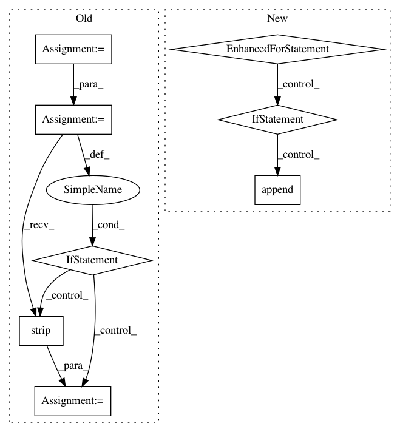

2e220e669fb099091a5f645cb63d50d55b07cb33,api-examples/tag-text.py,,,#,44
Before Change
feature_indices = feature_index_mapping(args.features)
sentence = []
with open(args.text, "r") as f:
for line in f:
if line.strip():
text = line.strip().split()
if feature_indices:
text = {feature: text[feature_indices[feature]] for feature in feature_indices}
else:
text = text[0]
sentence.append(text)
else:
texts.append(sentence)
sentence = []
if sentence:
texts.append(sentence)
else:
with open(args.text, "r") as f:
After Change
texts = []
if args.conll:
feature_indices = feature_index_mapping(args.features)
for sentence in read_conll(args.text):
if feature_indices:
texts.append([{k: line[v] for k, v in feature_indices.items()} for line in sentence])
else:
texts.append([line[0] for line in sentence])
else:
with open(args.text, "r") as f:
for line in f:
text = line.strip().split()
In pattern: SUPERPATTERN
Frequency: 3
Non-data size: 8
Instances
Project Name: dpressel/mead-baseline
Commit Name: 2e220e669fb099091a5f645cb63d50d55b07cb33
Time: 2019-04-17
Author: blester125@users.noreply.github.com
File Name: api-examples/tag-text.py
Class Name:
Method Name:
Project Name: THUNLP-MT/THUMT
Commit Name: 051bd416d3c41002f6d58b9dd71516a27243d178
Time: 2017-11-11
Author: playinf@stu.xmu.edu.cn
File Name: thumt/launcher/ensemble_translator.py
Class Name:
Method Name: main
Project Name: THUNLP-MT/THUMT
Commit Name: 051bd416d3c41002f6d58b9dd71516a27243d178
Time: 2017-11-11
Author: playinf@stu.xmu.edu.cn
File Name: thumt/launcher/translator.py
Class Name:
Method Name: main